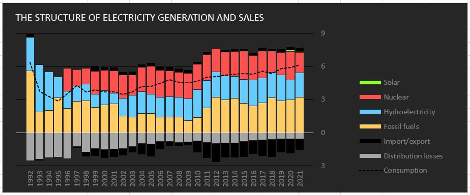
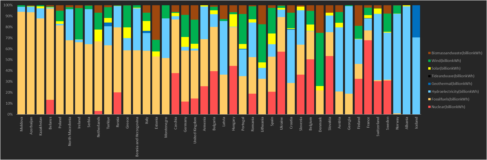

Chapter 0.
Introduction
In the 21st century, a global consensus has emerged at COP28, where nations collectively committed to a transformative agenda aimed at addressing the challenges posed by climate change. This agreement signifies a resolve to reduce and eventually eliminate the use of fossil fuels for energy purposes, marking a crucial step towards a more sustainable future.
In accordance with this commitment, countries worldwide, including Armenia, are acknowledging the need to change their energy paradigms. The focus is now on developing and integrating renewable energy sources, such as solar, wind, and hydropower, to replace traditional fossil fuel-based energy systems. The transition to a sustainable energy system is viewed as a collective responsibility to mitigate the impacts of climate change and build a more resilient and sustainable global economy.
The transition to a sustainable energy system is viewed as a collective responsibility to mitigate the impacts of climate change and build a more resilient and sustainable global economy. Nations are adopting innovative technologies and collaborative approaches to achieve this goal. As society works towards reducing its dependence on fossil fuels, we aim to create a future where economic growth is linked to environmental responsibility.
Our project aligns with this global vision by contributing to the shift towards renewable energy solutions. We strive to accelerate the adoption of clean energy technologies through collaboration, innovation, and community engagement, ensuring a smoother and more sustainable energy landscape. Together, we can reduce our dependence on fossil fuels and create a narrative of hope, resilience, and sustainable progress for current and future generations.
312
renewable energy power in Armenia
Chapter 1.
Problems
Dependency on Imports: Armenia is heavily dependent on imported natural gas and oil for its energy needs, making it vulnerable to geopolitical tensions and price fluctuations in global energy markets.
Aging Infrastructure: Armenia's energy infrastructure, including power plants and distribution networks, has suffered from outdated technology and aging equipment. This has resulted in decreased energy production efficiency and increased maintenance costs.
Limited Energy Resources: Armenia has faced challenges in terms of domestic energy resources. The country lacks significant fossil fuel reserves, and its renewable energy potential has not been fully exploited.
Energy Security Concerns: Armenia faced challenges in ensuring stable energy supplies due to its geopolitical situation. Political tensions in the region have the potential to disrupt the flow of energy resources, which could impact the country's energy security.
High Energy Dependency on Thermal Power Plants: Armenia's electricity generation was heavily reliant on thermal power plants, specifically those that use natural gas. This dependence made the energy sector vulnerable to fluctuations in gas prices and supply disruptions.
Chapter 2.
Armenia energy system
Until 1991, Armenia was one of the republics of the Soviet Union (USSR), the country was included in the unified all-Union energy system. Together with Armenia and Azerbaijan, Armenia formed the Transcaucasian energy system. After gaining independence, Armenia must completely restructure the sphere of electricity trade, establish electricity sales to enterprises and the public, introduce new laws and important government decisions in this area in order to meet the requirements of an open market in all sectors of the energy industry.
In total, 7.3 billion kWh is generated in Armenia every year (on average for the period since 2011). The structure of Armenia's electricity generation is dominated by thermal power plants - 3.18 billion kWh (43%). One third is generated by hydroelectric power plants - 2.2 billion kWh. The remaining 20% is generated at the Armenian Nuclear Power Plant. Only 1.24% is generated using alternative sources of electricity.

Among the positive trends, we can single out a gradual annual decrease in losses during electricity transmission from more than 2.53 billion kWh to 0.5 billion kWh per year. Since 1998, electricity exports have significantly exceeded imports. This became possible due to the emergence of excess capacity (commissioning of the Armenian NPP in 1996) and a decrease in domestic consumption during the crisis of the 1990s, which is noticeable in the figure 1. However, raw materials for nuclear power plants and thermal power plants have to be purchased from other countries (primarily from Russia) due to the lack of their own resources.

The structure of electricity generation in the countries of Europe and the South Caucasus region differs sharply. The decisive factor is the availability of its own natural resources and geographical location. So, in Azerbaijan, 94% of electricity is generated at oil thermal power plants. Georgia, on the contrary, having no fuel resources, generates 3/4 of the electricity at the HPP.
The historical factor is also important. This applies to a greater extent to nuclear energy (including the construction stage of power units at the time of the Chernobyl accident). The share of this type is maximum in countries such as France, Belgium, and Ukraine.
The maximum share of wind energy in small countries is Denmark, Ireland, and Lithuania. Solar power generation is the highest in percentage terms in Hungary, the Netherlands, Spain, Greece and Italy.
The high indicators of the Biomass and waste category in some countries are explained by the use of oil shale (Estonia), the use of residues from wood processing (Finland) and other reasons.
Chapter 3.
Characteristics of the types of electricity generation in Armenia
Natural gas is the most important primary energy source, and it is imported primarily from the Russian Federation. The designed capacity of the high pressure gas transportation network of Armenia is 17 billion m3/y. In 1980, the maximum demand for natural gas in Armenia was above 5-6 billion m3/y. Five main gas pipelines were built, which ensured gas delivery from three sides: Georgia, North Azerbaijan and West Azerbaijan. Today, only the Georgian pipeline is operating. In 2020, the natural gas demand was 2.6 billion m3, where 2.2 billion m3 was imported from the Russian Federation and 0.4 billion m3 from Islamic Republic of Iran. But the expected demand will be 5.5–6.2 billion m3/y, depending on the ANPP’s status (shut down or in operation). The gas pipeline Islamic Republic of Iran–Armenia, which is now fully constructed and has been in operation since spring 2009, has a capacity of 2.3 billion m3. There are underground storage facilities for natural gas with a maximal gas storage volume of 180 million m3. Currently, the available gas storage volume is 130 million m3. Gas distribution in Armenia is performed through high, medium and low pressure distribution networks [source]. About 42% of the incoming gas is used by the energy sector, the rest is household consumption (22%), industry (24%) and other consumers (12%).
Forming the foundation of Armenia’s renewable energy system as of 2022 were 189 small, private HPPs (under 30 MW), mostly constructed since 2007. Installed capacity is approximately 389 MW for annual generation of 943 GWh, covering 14% of domestic supply. Several small plants also produce wind power (4.2 MW), bioenergy (0.8 MW) and solar power (56 MW), with limited impact on system supplies. However, as we noticed, the share of alternative energy sources (not including hydropower) is only 1.2%.
Chapter 4.
Nuclear Power
In September 1966, the Council of Ministers of the former USSR decided to build a nuclear power plant in Armenia. In 1968, the Armenian branch of the Institute "Electrosetproekt" completed a preliminary study of the economic feasibility of building an NPP. The document envisaged a schedule for commissioning of power unit No. 1 in 1973 and power unit No. 2 in 1974.
The Gorky branch of the Atomteploelectroproject Institute was appointed the General Designer of the NPP. The main difficulties for the designers were associated with the high seismicity of the NPP location area in the complete absence of a regulatory framework.
More than 20 potential sites for the construction of an NPP were considered, and a site was selected in the western part of the Ararat Valley near the border with Turkey and from Yerevan.
In accordance with the terms of reference, the capacity of the APP (the first stage of construction) included VVER-440 type reactors with a total capacity of 815.0 MW (2x407.5 MW). The design life of the NPP was set at 30 years, as at all other nuclear power plants with this type of reactor.
The first power unit of the Armenian NPP was put into operation on December 22, 1976, and the second on January 5, 1980.
In 1983, after the approval of the project of the second stage of the NPP (two VVER-440 power units, type B-213), construction work began on the construction of the third and fourth power units, however, after the accident at the Chernobyl nuclear power plant in 1986, all construction work was curtailed.
On December 7, 1988, at 11:41 a.m., an earthquake of over 7 magnitude occurred in the northern regions of Armenia (Spitak). The station has fully maintained its functionality.
The Council of Ministers of the USSR and the Council of Ministers of the Armenian SSR decided to stop the Armenian NPP due to the great danger of its operation in a seismically unstable zone and the likelihood of repeated tremors. Resolution No. 24 of January 15, 1989 of the Council of Ministers of the Armenian SSR stated: "... Taking into account the general seismic situation in connection with the earthquake in the territory of the Armenian SSR ... to stop the first block of the NPP from February 25 and the second block from March 18, 1989."
However, in the future, taking into account the energy situation and the lack of its own energy carriers, the Government of the Republic of Armenia decided on April 7, 1993 "To begin restoration work and resume operation of the second power unit of the Armenian NPP."
In 1995, the 6 and a half years power unit of the ANPP, which had been in a mothballed state for 6.5 years, was launched.
Since that time, the plant generates from 2 to 2.5 billion kWh annually, which is about 30-40% of the total energy generation
Chapter 5.
Solar energy
Armenia has a significant solar energy potential. The average annual amount of solar energy flow per m2 of horizontal surface is about 1,720 kWh, compared with the average European figure of 1,000 kWh. One fourth of the country’s territory is endowed with solar energy resources of 1,850 kWh/m2 per year.
Armenia's solar power plants are not distinguished by their high capacity and size. They are mostly not connected to the general network and are installed on the roofs of houses, both private and public (Armenian American Wellness Centre, UN office in Spitak and others). According to a Armenian Energy Agency, More than 6940 autonomous electricity producers with 136.1 MW of total installed capacity are connected to the distribution grid, an additional 518 plants with 11 MW total capacity are in the process of connection. Individuals and businesses can install up to 150 kW and 500 kW solar power stations, produce electricity for internal consumption, and sell the surplus to the "Electric Networks of Armenia".
Wide implementation of solar PV systems is currently in progress. As of 1 July 2022, around 102.8 MW of solar PV installations (of up to 5 MW each) were in operation. Another batch of grid-connected PV power plants totalling 176.7 MW are under construction, the largest being the Masrik solar PV station with 6255 MW of installed capacity in Gegharkunik Region.
20
solar energy power in Armenia
Chapter 6.
Wind energy
In 2003, the Wind Energy Resource Atlas of Armenia was formed. According to it, economically reasonable wind power potential is estimated at 450 MW total installed capacity and at electric power output of 1.26 billion kWh/y. The main promising locations are the Zod (Sotk) Pass, Bazum Range, Pushkin and Karakhach Passes, Jajur Pass, Geghama Range, Sevan Pass, Aparan Region, Sisian-Goris Hills and Meghri Area.
In December 2005, for the first time in Armenia and in the Caucasus a grid-connected wind-power plant, Lori 1 Wind Farm, with capacity of 2.64 MW was launched at Pushkin Pass, located along the Bazum Mountains. It was funded by Iran and built by the Iranian company Sunir. In the future an increase of the wind power plant capacity up to 90 MW is planned.
Within the framework of the "The support of Armenia's energy policy" TACIS program implemented by the European Union a monitoring in the Semenovka Pass in Sevan region in 2007 was organized and a preliminary feasibility study (FS) for the construction of a wind power plant with a total installed capacity of 35 MW was compiled.
Within the framework of the wind energy program of the Armenian-Italian private company Ar Energy, monitoring in the Karakhach pass of the Shirak district has been completed. The company has received a license from the Public Services Regulatory Commission for the construction of the Karakhach-1 wind farm with a total installed capacity of up to 20 MW. In the future, it is planned to increase the capacity of the wind power plant to 140 MW. The current status of the design and construction of the station has not been determined.
Company “Energy Systems LLC” starts the implementation of Project Management and feasibility study of 1.32 MW capacity wind farm “Zod Wind” in the region of Sotk pass in Gegharkunik region.
According to the article 59 of the “Law on Energy” of RA, accepted on 7 March 2001, the electricity generated by SHPP during a period of 15 years and plants using other renewable energy sources (wind, solar, biomass and geothermal) is subject to compulsory purchase in 20 years at fixed rates. Other mechanisms have been established to promote the use of renewable energy sources
20
solar energy power in Armenia
Chapter 7.
Hydro energy
Vorotan Cascade power generation complex, commissioned during 1970‑1989 and operated by the private company ContourGlobal Hydro Cascade CJSC, has an operating capacity of 404 MW (installed capacity is also 404 MW). Annual generation is approximately 1 000 GWh from three HPPs, covering 15% of domestic supply. HPP Cascade consists of Spandaryan (76 MW), Shamb (171 MW) and Tatev (157 MW) HPPs.
Sevan-Hrazdan Cascade complex of hydroelectric plants privately owned and operated by International Energy Corporation CJSC with an 552 MW capacity (installed capacity is 561 MW). It was commissioned during 1940‑1962, and annual generation is approximately 450 GWh, or 6% of domestic supply. Sevan-Hrazdan HPPs Cascade includes 7 HPPs: Sevan's (34 MW), Hrazdan's (81 MW), Argel's (224 MW), Arzni's (70 MW), Kanaker’s (102 MW), Yerevan-1 (44 MW) and Yerevan-3 (5 MW) HPPs.
The potential of small rivers in hydropower is not fully used. According to licenses issued as of 1 January 2022, 20 more small HPPs are under construction, with total projected capacity of 39.3 MW supplying 136.7 million kWh of electricity annually.
The potential of the relatively large river system - Pambak-Dzoraget-Debed located in the north of the Republic, with the exception of the Dzoraget HPP (26 MW), is almost not used.
It is foreseen the construction of the following HPPs:
- Meghri HPP (about 100 MW capacity) on Araks River
- Shnogh HPP (about 75 MW capacity) on Debet River
20
solar energy power in Armenia